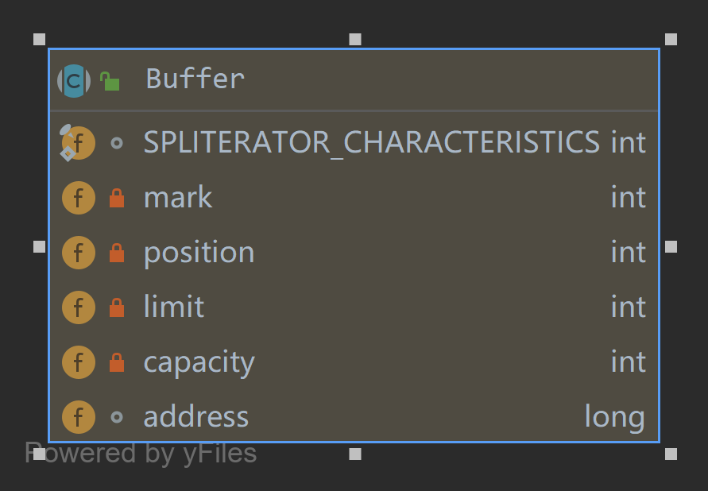
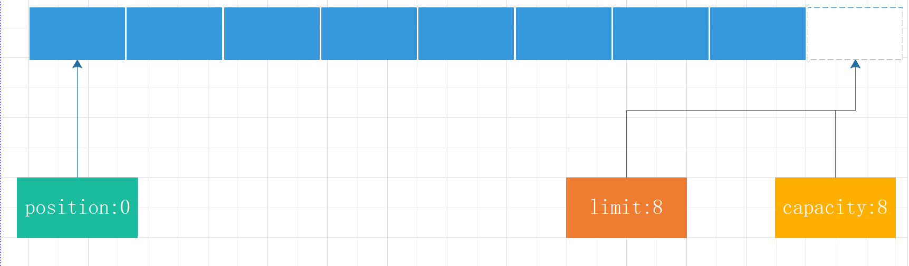
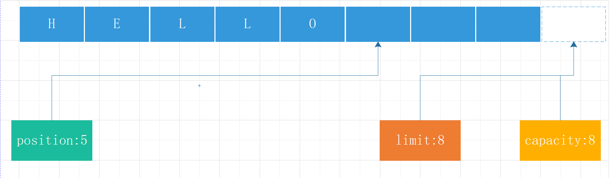
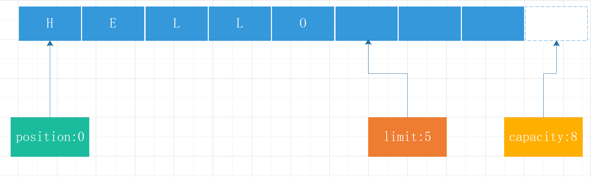
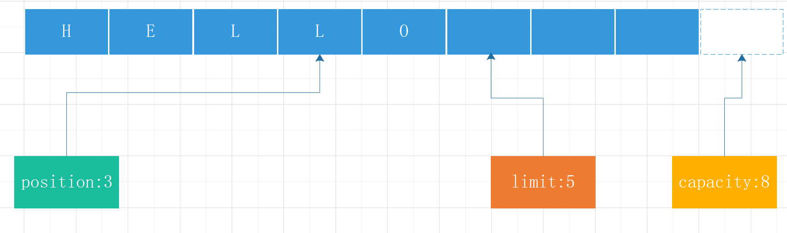
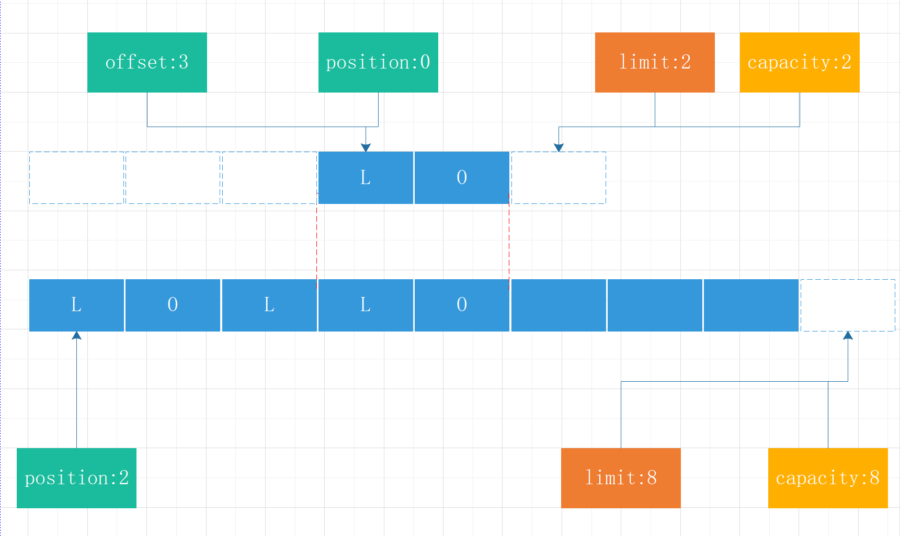

NIO-概览
NIO-Buffer
NIO-Channel
NIO-Channel接口分析
NIO-SocketChannel源码分析
NIO-FileChannel源码分析
本来是想学习Netty的，但是Netty是一个NIO框架，因此在学习netty之前，还是先梳理一下NIO的知识。通过剖析源码理解NIO的设计原理。
本系列文章针对的是JDK1.8.0.161的源码。
Buffer是NIO用于存放特定基元类型数据的容器。缓冲区是特定基元类型的元素的线性有限序列。通过容量(capacity)、限制(limit)和位置(position)三个属性控制数据的写入大小和可读大小。

容量
容量是它包含的元素数。 缓冲区在创建初始化容量之后容量就不会再更改。
偏移量
偏移量是要读取或写入的下一个元素的索引。 偏移量不会大于其容量大小。
限制大小
缓冲区的限制大小是最大可读或可写的索引位置，缓冲区限制大小不会大于其容量。
标志
可以通过mark()方法打一个标志，通过reset()可以将偏移位置恢复到标志位置。
Buffer可以在写模式和读模式进行切换。在写模式写入数据后切换到读模式可以确保读取的数据不会超过写入数据的容量大小。
除了bool类型以外每个基元类型都会有缓冲区
| 类型 | 缓冲区 |
|---|---|
| byte | ByteBuffer |
| char | CharBuffer |
| double | DoubleBuffer |
| float | FloatBuffer |
| int | IntBuffer |
| long | LongBuffer |
| short | ShortBuffer |
缓冲区分为HeapBuffer和DirectBuffer
HeapBuffer是堆缓冲区，分配在堆上，有java虚拟机负责垃圾回收。
DirectBuffer是Java Native Interface(JNI,Java本地接口)在虚拟机外的内存中分配了一块缓冲区。这块缓冲区不直接有GC回收，在DirectBuffer包装类对象被回收时，会通过Java Reference机制来释放该内存块。即当引用了DirectBuffer对象被GC回收后，操作系统才会释放DirectBuffer空间。
DirectByteBuffer是通过虚引用(Phantom Reference)来实现堆外内存的释放的。虚引用主要被用来跟踪对象被垃圾回收的状态，通过查看引用队列中是否包含对象所对应的虚引用来判断它是否即将被垃圾回收，从而采取行动。它并不被期待用来取得目标对象的引用，而目标对象被回收前，它的引用会被放入一个 ReferenceQueue对象中，从而达到跟踪对象垃圾回收的作用。
当使用HeapBuffer时，如果我们要向硬盘读取数据时，硬盘的数据会先复制到操作系统内核空间，操作系统内核再复制到堆缓冲区中，最后我们在从堆缓冲区读取字节数据。
当使用DirectBuffer时，如果我们要向硬盘读取数据时，硬盘的数据会先复制到操作系统内核空间，我们直接从内核空间读取字节数据。
由于JVM堆中分配和释放内存比系统分配和释放内存更高效，因此DirectBuffer尽可能重用来提高性能。
| - | HeapBuffer | DirectBuffer |
|---|---|---|
| 分配位置 | 堆内 | 堆外(操作系统内核) |
| 谁来释放 | GC | 当GC回收完对象时，操作系统会释放堆外内存 |
| 创建和释放性能 | 高 | 低 |
| 读写性能 | JVM多一次内存复制，性能低 | 直接读取操作系统内核，性能高 |
大端模式(Big-Endian就是高位字节排放在内存的低地址端，低位字节排放在内存的高地址端)
小端模式：Little-Endian就是低位字节排放在内存的低地址端，高位字节排放在内存的高地址端。
在NIO中以BufferOrder来区分大端还是小端。
public final class ByteOrder {
private String name;
public static final ByteOrder BIG_ENDIAN = new ByteOrder("BIG_ENDIAN");
public static final ByteOrder LITTLE_ENDIAN = new ByteOrder("LITTLE_ENDIAN");
private ByteOrder(String var1) {
this.name = var1;
}
public static ByteOrder nativeOrder() {
return Bits.byteOrder();
}
public String toString() {
return this.name;
}
}接下来以ByteHeapBuffer为例，讲解如何使用Buffer。
| 方法 | 说明 |
|---|---|
| position | 移动偏移量指针 |
| limit | 移动限制大小指针 |
| mark | 打标记，寄了当前偏移量的位置。可使用reset恢复到标记位置 |
| reset | 恢复到标记位置 |
| clear | 初始化指针,清理所有数据，转换为写模式(实际只是偏移指针，数据还在) |
| flip | 转换为读取模式 |
| rewind | 重置偏移量指针到初始状态，可以重新写入或重新读取 |
| remaining | 可读或可写容量 |
| hasRemaining | 是否可读或可写 |
| hasArray | 是否有数组缓存，若为堆缓冲区，则会有数据缓存，若为直接缓冲区，则没有。 |
| offset | 当前数组偏移量，当把当前数组切片时，无需复制内存，直接指向偏移量。 |
为了更清晰的说明缓冲区的功能，接下来以ByteBuffer举例。
各数据类型的缓冲区除了类型不一样，功能上基本是大同小异。
| 方法 | 说明 |
|---|---|
| allocate | 申请堆缓冲区 |
| allocateDirect | 申请直接缓冲区 |
| wrap | 将字节数组包在缓冲区中，可以理解为将字节数组转换为字节堆缓冲区 |
| slice | 缓冲区切片，当前偏移量到当前限制大小的内存生成一个缓冲区，无需复制内存，直接指向偏移量。 |
| duplicate | 共享一份缓冲区，缓冲区内容修改会互相影响，读取互不影响 |
| asReadOnlyBuffer | 拷贝一份只读的缓冲区。 |
| ix | 根据实际的offset偏移，对于外部来说是透明的，比如缓冲区切片之后，生成新的缓冲区实际是同一片内存，只是新的缓冲区存在offset偏移量，对切片后的缓冲区读写都会做偏移操作。 |
| compact | 初始化指针,清理已读取数据，转换为写模式(实际只是偏移指针position，数据还在) |
| getXXX | 读取数据 |
| putXXX | 写入数据 |
| asXXXBuffer | 转换为指定类型的缓冲区，字节缓冲区可以转换为其他基元类型的缓冲区，其他基元类型缓冲区不能反过来转换 |
通过
asXXXBuffer转换可以转换为对应的大端或小端数据可是读取方式，比如转换为double类型有ByteBufferAsDoubleBufferB和ByteBufferAsDoubleBufferL分别对应大端和小段。
对于HeapByteBuffer和DirectByteBuffer接口都是一样的，只是实现不一样，一个是操作堆内存，一个是操作直接内存。
ByteBuffer byteBuffer = ByteBuffer.allocate(8);ByteBuffer byteBuffer = ByteBuffer.allocateDirect(8);
DirectByteBuffer(int cap) {
super(-1, 0, cap, cap);
boolean pa = VM.isDirectMemoryPageAligned(); //是否页对齐
int ps = Bits.pageSize(); //获取pageSize大小
long size = Math.max(1L, (long) cap + (pa ? ps : 0)); //如果是页对齐的话，那么就加上一页的大小
Bits.reserveMemory(size, cap); //在系统中保存总分配内存(按页分配)的大小和实际内存的大小
long base = 0;
try {
base = unsafe.allocateMemory(size); //分配完堆外内存后就会返回分配的堆外内存基地址
} catch (OutOfMemoryError x) {
Bits.unreserveMemory(size, cap);
throw x;
}
unsafe.setMemory(base, size, (byte) 0); //初始化内存
//计算地址
if (pa && (base % ps != 0)) {
address = base + ps - (base & (ps - 1));
} else {
address = base;
}
// 构建Cleaner对象用于跟踪DirectByteBuffer对象的垃圾回收，以实现当DirectByteBuffer被垃圾回收时，堆外内存也会被释放
cleaner = Cleaner.create(this, new Deallocator(base, size, cap));
att = null;
}写入数据
byte[] data = new byte[] {'H','E','L','L','O'};
byteBuffer.put(data);
堆缓冲区写入数据data
public ByteBuffer put(byte[] src, int offset, int length) {
//校验传入的参数是否合法
checkBounds(offset, length, src.length);
//在写入数据时首先会判断可写容量，大于容量则会抛出`BufferOverflowException`
if (length > remaining())
throw new BufferOverflowException();
//将数据写入到指定的位置
System.arraycopy(src, offset, hb, ix(position()), length);
//更新偏移量
position(position() + length);
return this;
}直接缓冲区写入数据
public ByteBuffer put(byte[] src, int offset, int length) {
//当写入长度大于JNI_COPY_FROM_ARRAY_THRESHOLD(6)时写入
if ((length << $LG_BYTES_PER_VALUE$) > Bits.JNI_COPY_FROM_ARRAY_THRESHOLD) {
checkBounds(offset, length, src.length);
int pos = position();
int lim = limit();
assert (pos <= lim);
int rem = (pos <= lim ? lim - pos : 0);
if (length > rem)
throw new BufferOverflowException();
Bits.copyFromArray(src, arrayBaseOffset, offset << $LG_BYTES_PER_VALUE$,
ix(pos), length << $LG_BYTES_PER_VALUE$);
position(pos + length);
} else {
//当长度小于6时，逐字节写入
super.put(src, offset, length);
}
}
//super.put(src, offset, length);
public ByteBuffer put(byte[] var1, int var2, int var3) {
checkBounds(var2, var3, var1.length);
if (var3 > this.remaining()) {
throw new BufferOverflowException();
} else {
int var4 = var2 + var3;
for(int var5 = var2; var5 < var4; ++var5) {
this.put(var1[var5]);
}
return this;
}
}这里以6为界限的目的是什么?会有多少性能差异，哪位同学清楚的话麻烦告知一下。
转换为读模式
byteBuffer.flip();
public final Buffer flip() {
//当前可读位置指向，写入的位置
this.limit = this.position;
//读取开始位置置为0
this.position = 0;
this.mark = -1;
return this;
}读取数据
byte[] data1 = new byte[3];
byteBuffer.get(data1);
public ByteBuffer get(byte[] dst, int offset, int length) {
//检查传入参数
checkBounds(offset, length, dst.length);
//超过可读大小抛出BufferUnderflowException异常
if (length > remaining())
throw new BufferUnderflowException();
//根据实际this.offset偏移后的位置读取数据
System.arraycopy(hb, ix(position()), dst, offset, length);
position(position() + length);
return this;
}public ByteBuffer get(byte[] dst, int offset, int length) {
//当读取长度大于6时复制，小于6时逐字节复制
if ((length << $LG_BYTES_PER_VALUE$) > Bits.JNI_COPY_TO_ARRAY_THRESHOLD) {
checkBounds(offset, length, dst.length);
int pos = position();
int lim = limit();
assert (pos <= lim);
int rem = (pos <= lim ? lim - pos : 0);
//超过可读大小抛出BufferUnderflowException异常
if (length > rem)
throw new BufferUnderflowException();
Bits.copyToArray(ix(pos), dst, arrayBaseOffset,
offset << $LG_BYTES_PER_VALUE$,
length << $LG_BYTES_PER_VALUE$);
position(pos + length);
} else {
super.get(dst, offset, length);
}
return this;
}缓冲区切片
ByteBuffer sliceByteBuffer = byteBuffer.slice();切片了之后换创建一个新的缓冲区，但是实际的数据内存指向的是同一块内存。
初始化指针,清理已读取数据
data.compact();此时将data初始化，会将未读取的2个字节复制到数组头部，同时转换为写模式。
public ByteBuffer compact() {
//复制未读取的数据到初始位置
System.arraycopy(this.hb, this.ix(this.position()), this.hb, this.ix(0), this.remaining());
//设置当前偏移量为未读取的长度即5-3=2
this.position(this.remaining());
//设置限制大小为容量大小
this.limit(this.capacity());
//设置标记为-1
this.discardMark();
return this;
}初始化指针，清理所有数据
data.clear();
完整代码
public static void main(String[] args) {
byte[] data = new byte[] {'H','E','L','L','O'};
System.out.println(new String(data));
ByteBuffer byteBuffer = ByteBuffer.allocate(8);
byteBuffer.put(data);
byteBuffer.flip();
byte[] data1 = new byte[3];
byteBuffer.get(data1);
System.out.println(new String(data1));
ByteBuffer sliceByteBuffer = byteBuffer.slice();
byte[] data2 = new byte[2];
sliceByteBuffer.get(data2);
System.out.println(new String(data2));
byteBuffer.compact();
byteBuffer.clear();
}NIO通过引入缓冲区的概念使得对字节操作比传统字节操作会方便一些，但是读写模式需要来回转换会让人有点头晕。
微信扫一扫二维码关注订阅号杰哥技术分享
出处：https://www.cnblogs.com/Jack-Blog/p/11996309.html
作者：杰哥很忙
本文使用「CC BY 4.0」创作共享协议。欢迎转载，请在明显位置给出出处及链接。